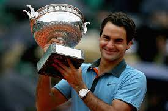
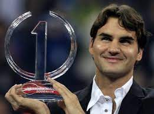
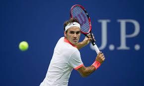
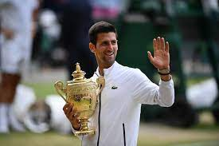

Records históricos
Cantidad de Titulos
Federer cuenta con 103 titulos ATP, el segundo tenista con más titulos solo detrás de Jimmy Connors.
Titulos grand salm
Federer cuenta con 20 Grand Slams. Es uno de los 3 tenistas en lograr esa marca y el primero en haber llegado
Numero 1 del mundo
Federer fue número 1 del ranking ATP por 310 semanas, el segundo tenista con más titulos solo detrás de Novak Djokovic
Estilo de juego
Drive
El golpe de Federer es conocido por ser uno de los más hermosos y efectivos en el tenis.
Saque
Con una velocidad de 220 km/h en promedio, el saque de Federer es uno de los más precisos y dominantes en el circuito..
Reves
Los expertos dicen que cuenta cn el mejor slice de reves visto en la historia del tenis.
Comparación con otros jugadores
Nadal
Nadal es indiscutiblemente el mejor tenista en la historia en polvo de ladrillo.Sin embargo el tenis tiene 3 superficies y Federer lo domina en las dos restantes: Pasto y carpeta.
Djokovic
En el momento donde ambos estaban en su pico Federer era indiscutiblemente superior a Novak. Una gran parte de los titulos de Djokovic llegan en la parte final de la carrera de Roger y posterior a su retiro
Resto del mundo
Aunque el tenis ha tenido un gran número de super estrellas, nadie por fuera de Nadal y Djokovic puede competir en nivel de juego, titulos obtenidos y longevidad que logró el tenista suizo. El siguiente competidor está a años luz de estos tres.